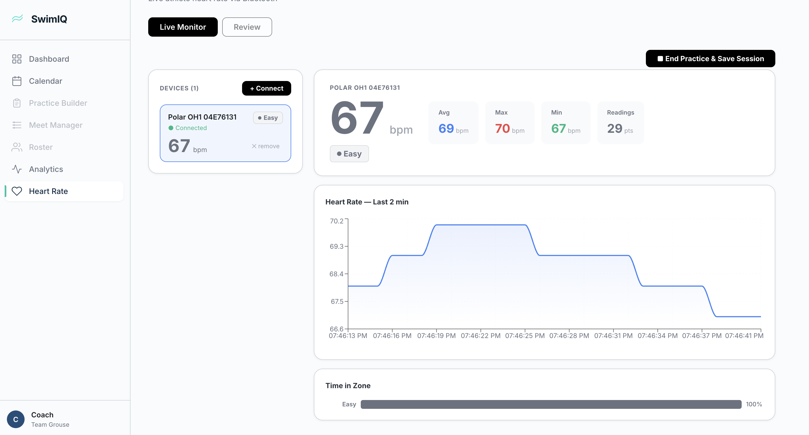
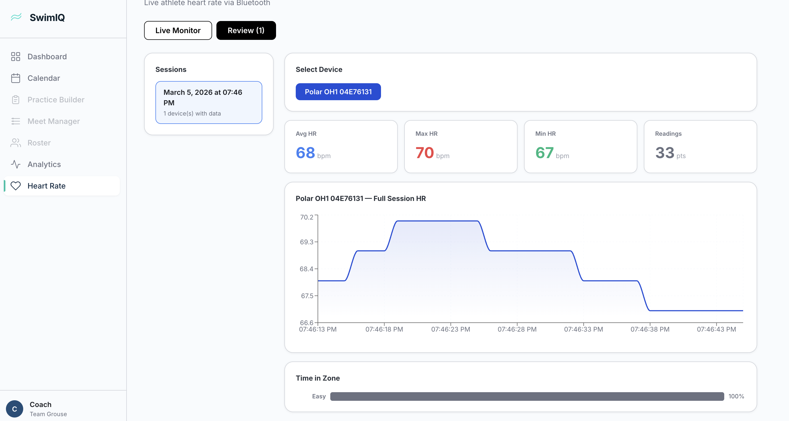

Heart Rate Dashboard
This week we began implementing a heart rate dashboard that will allow coaches to visualize swimmer heart rate data alongside training information. The interface for displaying heart rate trends and zones is now in development, providing the foundation for analyzing effort levels during practices and workouts.
One of the major challenges we encountered is that Bluetooth BLE signals do not reliably transmit through water. Because of this limitation, live streaming from devices like Polar heart rate monitors during swims is difficult to support. Instead, we are exploring integration with the Polar AccessLink API, which allows heart rate data to be retrieved after a workout session has synced. Future work will investigate other possible approaches for near real-time monitoring.
Below is a quick sample view of the heart rate page.


Firebase Integration
We also began integrating Firebase into the application and set up a Firestore database. This will allow SwimIQ to persist data beyond local application state and support future features such as authentication, team data management, and user profiles.
As part of this work, we started planning the separation between swimmer and coach profiles. This structure will allow coaches to manage team data while swimmers can eventually access their own performance metrics and training history.
Analytics and Model Improvements
On the analytics side, improvements were made to the machine learning model used for estimating swimmer performance trends. While the model is functioning, additional work is planned to improve prediction accuracy by refining the training data and expanding the dataset used by the analytics pipeline.
What’s Next
- Continue integrating Firebase and expanding the Firestore database structure
- Improve heart rate data collection and evaluate Polar AccessLink API workflows
- Further refine the machine learning model and dataset used for performance predictions
- Finish development of swimmer and coach profiles
Check in soon for more updates!